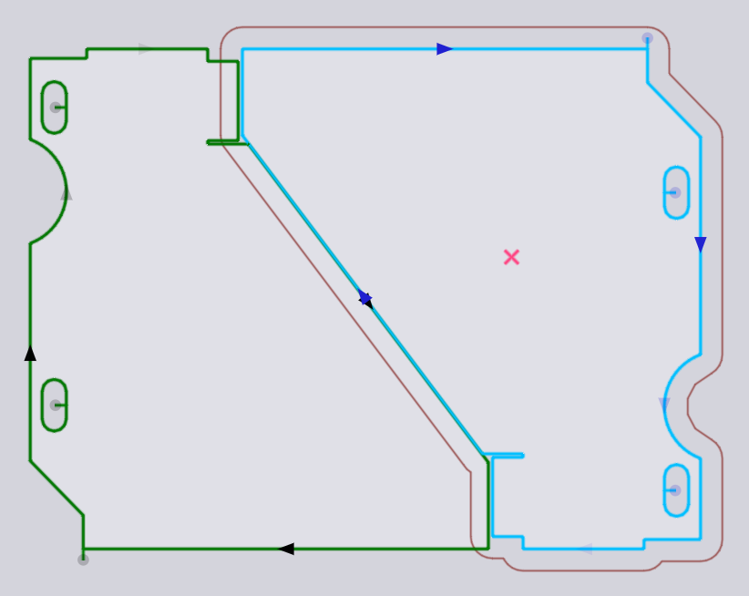
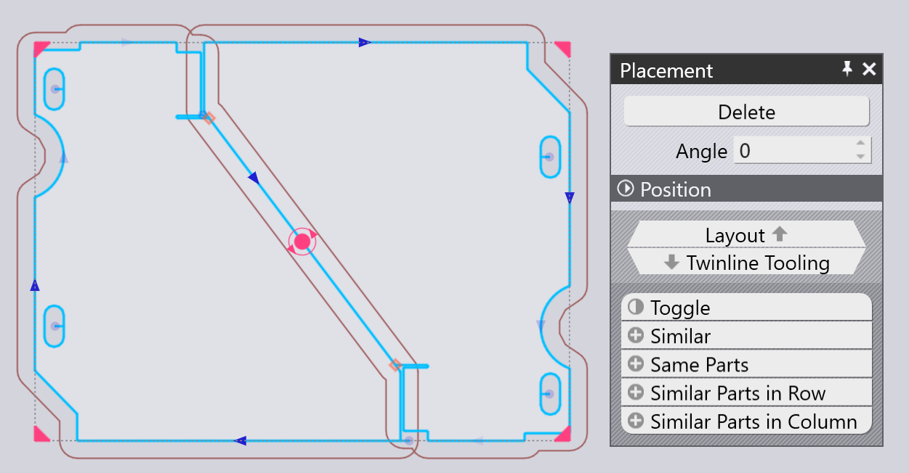

放置面板
已添加的零件（或布局上的任何现有零件），可使用放置面板进行移动、旋转或重复，该面板在您单击零件时出现：

-
左、下缘、 右 和上缘设置是零件的_边界框_的限制，这些可用于精确定位零件。
-
您也可以单击零件中心的红色圆形_手柄_并开始拖动它以将其定位在板材上。当您拖动零件时，TecZone Laser 将添加卡入指南，以帮助您使用与相邻零件的精确间隙（桥宽度）来定位零件。在放置零件时，也会围绕零件绘制_轮廓_，偏离实际零件轮廓，偏移幅度为桥宽度。
-
角度 设置可用于旋转零件，由此可尝试其他方向。当您通过手柄拖动零件时，您也可以按住Ctrl键并旋转鼠标滚轮，以交互式地旋转零件。
-
使用Ctrl+单击可创建零件的副本，然后开始拖动该副本。
-
使用Alt+单击可垂直镜像零件， Alt+Shift+单击可水平镜像零件。
-
此面板底部有几个选择器：
-
单击切换以取消选择所选零件，然后选择其他所有内容。
-
单击相似以选择_相同的角度_的同一零件的所有副本。
-
单击相同零件以选择同一零件的所有副本（无论旋转角度如何）。
-
单击一行内的相似零件以全选相同角度和相同水平位置的零件。
-
单击一栏内的相似零件以选择相同角度和相同垂直位置的所有零件。
-
TwinLine（共用线）放置
使用Shift+单击开始拖动零件，会将放置切换到_Twinline_模式 - 当您一起拖动相近的两个平行边缘时，TecZone Laser将通过它们之间的精确切口宽度距离把它们卡在一起，以使它们可以作为一条共用线进行切割。此处为我们使用Shift+单击拖动零件时发生卡入的示例：

当鼠标被释放时，这两个零件形成一个Twinline组，其中共享线仅切割一次（您可以看到中间对角线处只有一个切割线箭头）。
